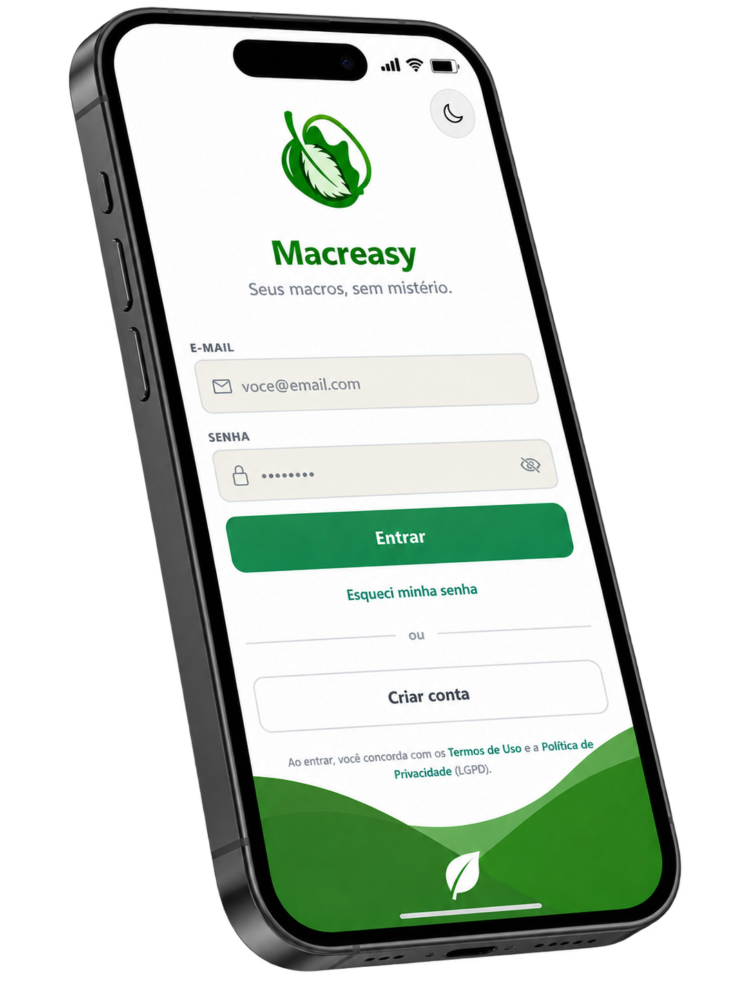

Com o Macreasy, acompanhar sua rotina torna-se algo simples, acessível e
prático. A plataforma permite que você registre suas refeições,
monitore seus
nutrientes em tempo real e amplie seu aprendizado sobre escolhas alimentares conscientes.
Afinal, acreditamos no seu protagonismo:
Sua alimentação. Seus
dados. Seu
conhecimento.